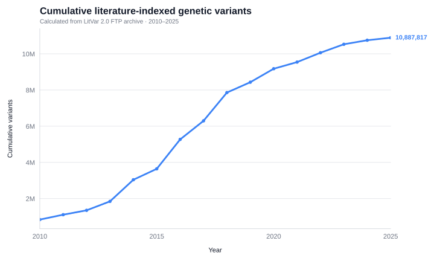
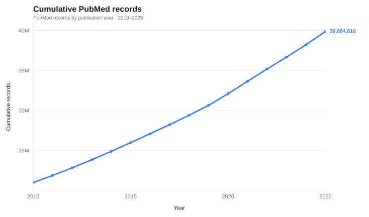
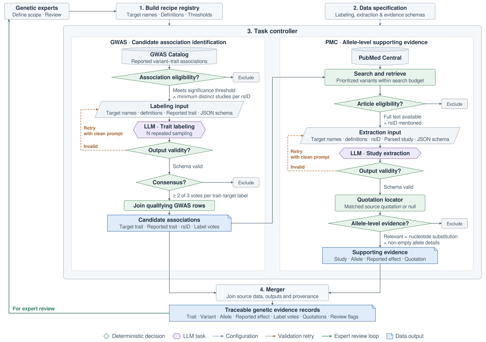

1. Project goal
Whole-genome sequencing (WGS) has unlocked our ability to read the human genome at scale (~3.2 billion base pairs). However, the scientific knowledge required to understand it remains fragmented across millions of publications and specialized databases.
We're experimenting with a personal genomics RAG system that connects WGS data with published genetic research, enabling individuals to explore and understand their own genomes through scientific evidence, while complementing geneticist counseling. For example, users can explore how their genetic makeup may influence their predisposition to hyperlipidemia, or how their body may respond to caffeine differently than others.
2. Problem
Developing such system poses 3 main challenges:
-
Build genetic evidence: Identify candidate genetic associations (e.g.
trait-variant-allele-effect) at scale from evolving scientific literature, particularly for complex polygenic traits often involve thousands of variants. See example at Table 1. -
Evaluate evidence: Determine evidence applicability by accounting for population ancestry, conflicting studies, variant causality, joint effects of multiple variants, etc. This requires specialized expertise in statistical genetics and bioinformatics.
-
Evaluate RAG system: Probe its potential impact on patient safety, adherence to intended use (e.g. educational, non-diagnostic), while FDA regulatory guidance for generative AI in healthcare is still evolving.
This post focuses on the first challenge, building genetic evidence for expert review.
3. Challenges of building genetic evidence
3.1. Scale and continuous updates
Many complex traits are highly polygenic, with hundreds to thousands of contributing genetic variants. Taking lipid genetics as an example, new variant–trait associations, candidate causal variants, and biological mechanisms continue to be reported.
| Year | Study | Reported finding |
|---|---|---|
| 2025 | Selvaraj et al. — Whole-genome analysis of LDL cholesterol | 704 novel single-variant associations with LDL cholesterol |
| 2024 | Mendes et al. — Germline variants in severe hypertriglyceridemia | 16 previously unreported variants, including variants of uncertain significance |
| 2023 | Junna et al. — Finnish-enriched hypercholesterolemia variants | 3 variants in LDLR and LDLRAP1 likely associated with hypercholesterolemia |
| 2022 | Gandhi et al. — Genetic burden of familial hypercholesterolemia | 14 putatively novel single-nucleotide variants and one novel PCSK9 copy-number variant |
| 2021 | Reeskamp et al. — Intronic variants and LDLR splicing | 1 deep intronic LDLR variant causing abnormal RNA splicing |
| 2020 | Juang et al. — Rare variant discovery in Taiwan | 3 novel hyperlipidemia-associated candidate variants |
Table 1. Selected discoveries in lipid genetics, 2020–2025.
Collecting and maintaining evidence at this scale is challenging, as genetic knowledge is dispersed across a growing number of scientific publications and specialized databases:
- GWAS Catalog: over 1 million variant–trait associations.
- LitVar 2.0: 13.8 million unique genetic variants reported as of December 2022.
- PubMed Central: over 11 million full-text records as of FY2025.


This motivates a reusable evidence pipeline that allows experts to define the scope of evidence discovery and automate literature screening and evidence extraction across different traits.
3.2. Verifiability of LLM-generated evidence
While LLMs offer an approach to processing scientific literature at scale, their outputs require expert verification.
- Are the model's classification decisions consistent?
- Can the extracted claims be traced to supporting evidence in the source study?
The challenge worth solving here is to automate evidence collection without making subsequent expert verification unnecessarily difficult.
4. Method

The pipeline supports two early stages of expert genetic evidence collection: identifying candidate genetic associations and collecting their allele-level supporting evidence.
We decompose this workflow into two sequential LLM tasks:
- Trait labeling: Identify GWAS-reported traits relevant to expert-defined target traits and derive candidate trait–variant associations.
- Study extraction: Identify and extract allele-level supporting evidence from studies available in PubMed Central (PMC).
Starting from GWAS associations is one strategy for defining the candidate search space.
To make the pipeline inspectable, we introduce two mechanisms:
- Label consistency: Repeat trait labeling to expose variability in model judgments.
- Quotation verification: Locate supporting quotations for extracted claims in the source study through lexical matching.
These mechanisms facilitate expert verification rather than establish the scientific validity of model outputs.
The pipeline consists of four main components.
4.1. Build recipe registry
Allows genetic experts to define the scope of evidence discovery:
- Target trait
- Name (e.g., hyperlipidemia).
- Trait definition.
- GWAS association scope
- GWAS significance threshold.
- Minimum number of distinct GWAS studies per variant, as a proxy for how extensively a variant has been studied.
- PMC study evidence scope
- Literature search terms.
- Maximum variants searched per target.
- Maximum search results per query.
- Maximum articles selected for extraction per target–variant pair.
- Labeling configuration
- Number of repeated labeling runs.
- Minimum number of agreeing votes.
4.2. Data specification
Defines the schemas for representing genetic associations, supporting evidence, and decision provenance:
- Association: Target trait, GWAS-reported trait, and genetic variant.
- Evidence: Source study, allele, reported effect, and supporting quotation.
- Provenance: Label votes, selection decisions, quotation verification status, and source references.
The current allele-level evidence dataset focuses on nucleotide substitutions, excluding insertions and deletions.
4.3. Task controller
Manages data acquisition, task preparation, output validation, and execution.
Data acquisition
- GWAS Catalog: retrieve reported variant–trait associations.
- PMC: search, retrieve, and parse full-text publications, including structured tables.
Task preparation
- Apply deterministic filtering and selection criteria defined in the build recipe.
- Prepare task-specific prompts with source data and output schemas.
Output validation
- Validate model outputs against Pydantic schemas and task-specific constraints.
- Perform repeated trait labeling (default N = 3) and apply consensus-based filtering.
- Verify the presence of supporting quotations in the source text through lexical matching.
Task execution
- Manage token budgets, inference requests, completion status, failures, and retries.
- Use SGLang for concurrent inference management.
Inference setup: One H100 GPU serving GPT-OSS-120B with FP8 KV cache. Maximum concurrency and sequence length are configured by task type.
4.4. Merger
Joins source data, LLM outputs, label consistency signals, and decision provenance into structured, traceable records that help experts answer:
- What is the candidate association? Target trait, GWAS-reported trait, and variant.
- How consistent is the labeling? Label votes across repeated runs.
- What evidence supports the association? Source study, extracted allele-level effects, and supporting quotations.
- Where is the evidence reported? Quotations and their locations in the source study.
- Why was the record included? Selection criteria and recorded decisions.
The resulting records provide a focused and inspectable evidence dataset for subsequent expert evaluation. Review sheets also allow experts to inspect and override automated trait labels.
5. Results
We examine the pipeline's end-to-end execution on three prevalent polygenic phenotypes: hyperlipidemia, hypertension, and hyperglycemia.
The reference run uses the following build recipe:
| Parameter | Setting |
|---|---|
| GWAS significance threshold | P ≤ 5 × 10⁻⁸ |
| Minimum GWAS studies per variant | 4 |
| Trait labeling runs | 3 |
| Trait labeling consensus | ≥ 2 of 3 votes |
| Variants searched per target | 500 |
| Maximum search results per query | 30 |
| Maximum articles extracted per target–variant pair | 5 |
5.1. Identifying candidate associations at scale
How many GWAS-reported traits match our target phenotypes, and how consistent are the LLM judgments?
Starting from 1,061,816 GWAS association records, statistical prefiltering produces 25,926 unique trait descriptions for LLM labeling. Each trait is screened against the target definitions across three labeling runs.
Table 2. GWAS trait labeling results.
| Metric | Hyperlipidemia | Hypertension | Hyperglycemia | Total |
|---|---|---|---|---|
| Proposed labels | 2,142 | 113 | 193 | 2,448 |
| 3/3 votes | 1,124 (52.5%) | 85 (75.2%) | 140 (72.5%) | 1,349 (55.1%) |
| 2/3 votes | 290 (13.5%) | 8 (7.1%) | 19 (9.8%) | 317 (13.0%) |
| 1/3 vote | 728 (34.0%) | 20 (17.7%) | 34 (17.6%) | 782 (31.9%) |
| Matched traits (≥ 2 votes) | 1,414 (5.45%) | 93 (0.36%) | 159 (0.61%) | 1,659 (6.40%) |
| Corresponded candidate variants | 8,740 | 3,240 | 2,650 | 11,975 |
Voting percentages are relative to proposed labels. Matched-trait percentages are relative to the 25,926 screened traits. Total matched traits and candidate variants are deduplicated across targets.
- Across the three targets, 1,659 unique traits (6.4%) meet the consensus criterion, identifying 11,975 unique candidate variants.
- Of 2,448 proposed labels, 782 (31.9%) receive only one vote.
LLMs enable large-scale semantic screening of GWAS trait descriptions. However, variability across labeling runs motivates the use of consensus-based filtering before expert review.
5.2. How much supporting evidence can we find?
Given a candidate genetic association, how often can we identify relevant literature containing allele-level evidence?
For each target, we search PMC for 500 prioritized variants. Articles explicitly mentioning the variant's rsID are eligible for extraction, with a maximum of five articles per target–variant pair.
Table 3. Identification of allele-level supporting evidence.
| Metric | Hyperlipidemia | Hypertension | Hyperglycemia | Total |
|---|---|---|---|---|
| Records processed | 1,450 | 1,128 | 1,467 | 4,045 |
| Relevant | 252 (17.4%) | 293 (26.0%) | 451 (30.7%) | 996 (24.6%) |
| Otherwise | 1,198 (82.6%) | 835 (74.0%) | 1,016 (69.3%) | 3,049 (75.4%) |
| Relevant with allele-level evidence | 114 (7.9%) | 175 (15.5%) | 256 (17.5%) | 545 (13.5%) |
| Allele-level findings | 177 | 297 | 406 | 880 |
Each record represents a target–variant–article combination. Percentages are relative to processed records. Allele-level evidence requires a nucleotide substitution and explicit allele information.
- Only 24.6% of processed records are labeled as relevant to the target association.
- Only 13.5% meet the allele-level evidence criteria.
- Despite having the largest GWAS candidate variant set, hyperlipidemia yields the fewest supporting evidence records.
The abundance of reported genetic associations does not necessarily translate into an abundance of allele-level supporting evidence. Even within a targeted literature search, supporting evidence meeting our criteria is sparse.
Where is supporting evidence reported?
We also examine where LLMs cite supporting evidence within source publications. Of the 545 evidence records, 519 (95.2%) contain locatable source quotations.
Table 4. Source locations of supporting quotations.
| Article section | Non-table | Table | Total |
|---|---|---|---|
| Abstract | 22 | 0 | 22 (4.2%) |
| Introduction | 3 | 0 | 3 (0.6%) |
| Methods | 9 | 13 | 22 (4.2%) |
| Results | 186 | 247 | 433 (83.4%) |
| Discussion | 14 | 0 | 14 (2.7%) |
| Conclusion | 0 | 0 | 0 (0.0%) |
| Other | 21 | 4 | 25 (4.8%) |
| Total | 255 (49.1%) | 264 (50.9%) | 519 (100%) |
Combined Results and Discussion sections are grouped under Results. Quotations without identifiable source locations are excluded.
Approximately 83% of supporting quotations originate from Results sections and 51% from tables. This highlights the importance of full-text and structured table processing when collecting allele-level genetic evidence.
6. Conclusion
Genetic association data is abundant, but relevant, allele-specific supporting evidence is sparse.
The LLM-assisted pipeline supports two early stages of expert evidence curation: identifying candidate genetic associations at scale and collecting their supporting evidence.
By preserving explicit selection criteria, intermediate results, and source provenance, the pipeline provides an inspectable evidence dataset for subsequent expert evaluation.